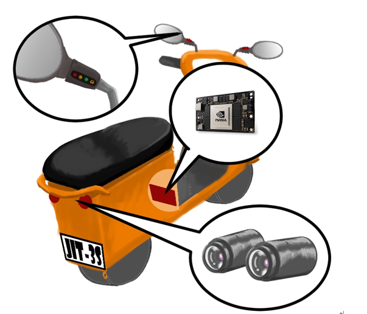
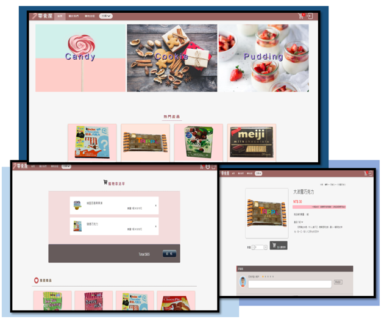
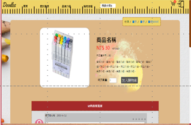
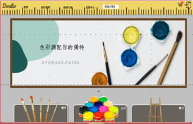
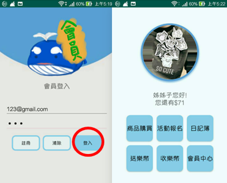
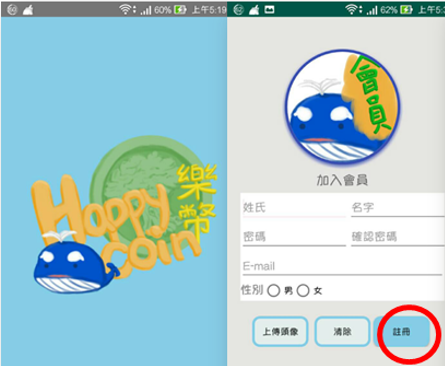
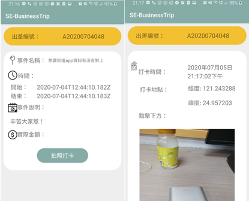
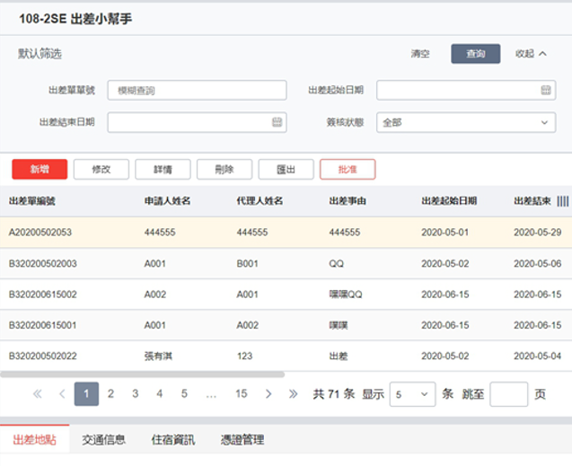
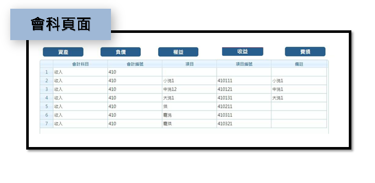
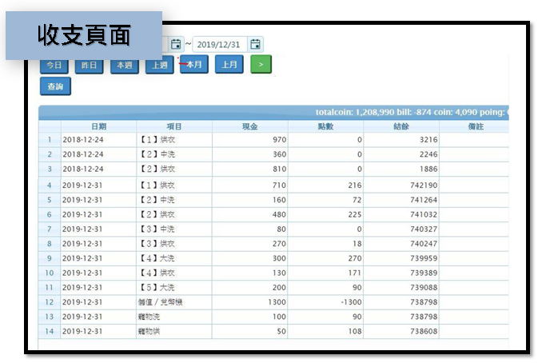

吳明慧
中原大學 資訊管理學系
詳細履歷
About me
我是一位對事情認真負責任的人，懂得做妥善的規劃，並且樂於學習新知，透過每次的專題，不斷提升自我學習以及問題解決的能力。在面對挑戰時，不因畏懼錯誤而放棄，也懂得從自我反思的過程中學習。
Taiwan,Taoyuan
1998/09/05
Contact
Education
桃園市立楊梅高級中等學校
2013.09-2017.06
中原大學-資訊管理學系
2017.09-2021.06
中央大學-資訊管理學系
2021.09-
Experience
(企業實習)育成洗衣坊
2020.8-2020.10
(暑期工讀)小人國
2019.07-2019.09
(在學工讀)中原大學通識中心
2018.09-
Programming Skills
Front End
Back End
JAVA
python
R Language
TensorFlow
C#
Profession Skills
Word Processing
90%
Photo shop
60%
Video editing
60%
Japanese
40%
Project Experience
畢業專題 | JIT3's-機車安全輔助王

技術
▸Python、TensorFlow
介紹：
▸提出面向「機車族的年輕人」，一種換位思考的全新「機車防撞裝置」。
經歷：
▸榮獲校內畢業專題初審第二名
▸代表中原資管系參加「2020第25屆大專校院資訊應用服務創新競賽」
購物網站 | 零食屋

技術
▸後端、SQL、JSP、html
介紹：
▸由另一班級完成前端網頁設計，而我們負責後端連接，及商品後台管理部分。
經歷：
▸榮獲校內專題比賽第三名
購物網站 | Doodles
 
技術
▸前端、html、css、RWD、javascript、bootstrap
介紹：
▸架構電子商店網站雛形。
▸學習設計出良好的UI/UX
經歷：
銀髮族app | Happy Coin
 
技術
▸APP程式開發、Java 、SQL
介紹：
▸此款APP設計給銀髮族，參加活動、購買商品。
▸本系統，包含會員專用APP，以及廠商專用APP。
經歷：
▸榮獲校內專題比賽優勝
華新麗華 | 差勤小幫手
 
技術
▸Java 、SQL、API
介紹：
▸為了簡化出差手續，以手機端與網頁端節做結合
經歷：
▸榮獲校內專題比賽第一名
企業實習 | 育成洗衣坊
 
技術
▸node.js， RWD， MySQL， redis， javascript， AJAX、jqGrid
介紹：
▸針對收支、會計、會員...等網頁
▸以專案團隊的模式，進行專案開發
更多關於我